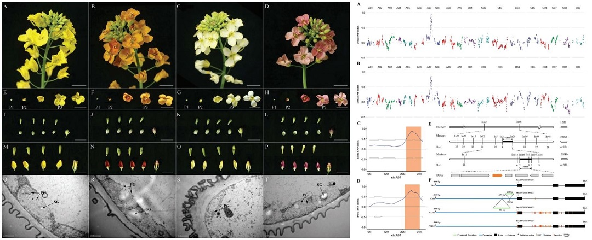
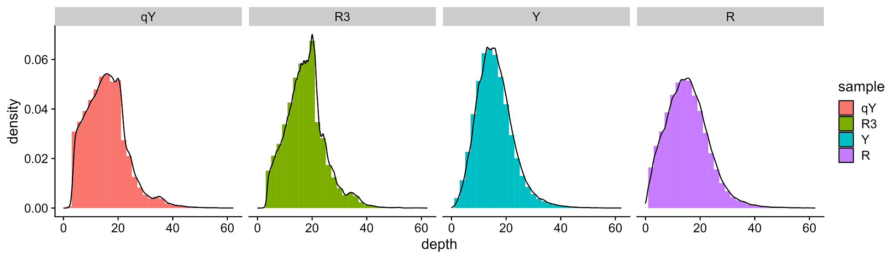

QTL-seq系列 | 使用easyQTLseq进行QTL-seq分析
📌 更新说明（2025-06-30）
发布 easyQTLseq v1.1.0，新增了以下功能：
新增欧式距离算法阈值，ED4 均值加上三倍 ED4 的标准差作为阈值，超过该值的区域为显著 QTL。
📌 更新说明（2025-08-09）
发布 easyQTLseq v1.2.0，新增了以下功能：
新增G’算法，p-value=0.01的G值作为阈值，超过该值的区域为显著 QTL。
最新版本请访问：easyQTLseq
QTL-seq是一种结合混池分离分析（Bulked segregant analysis，BSA）和高通量测序的方法[1]，这种方法对于质量性状 QTL 或数量性状主效 QTL 定位具有省时省力省钱的特点。我们在前面已经介绍过QTL-seq分析的原理以及如何计算QTL-seq中的的置信区间。这里我们介绍如何使用R包 easyQTLseq 进行 QTL-seq 分析。
easyQTLseq 包的一个优势是可以灵活处理有无亲本信息、有一个还是两个亲本信息以及亲本是否有参考基因等各种情况，并且可以导出各个计算过程的结果以及生成高质量的图片。
安装easyQTLseq
easyQTLseq 包在 GitHub 上，使用 devtools 包安装。
1 | |
准备输入数据
使用 GATK VariantsToTable
对亲本和混池的测序数据使用 GATK best practice pipeline 得到 VCF 文件，其中包含了各个样本的基因型（Genotype，GT）、基因型质量（Genotype Quality，GQ）、等位基因的深度（Allelic Depth，AD）以及一些其他的信息。为了加快数据读取和处理速度，使用 GATK 的 VariantsToTable 功能提取 CHROM、POS、REF、ALT 以及各个样本的 GT、GQ 和 AD 信息。
1 | |
使用 vcf2table
如果说你只有一个 VCF 文件，而且没有装 GATK，那如何做格式转换呢？easyQTLseq 包提供了一个函数 vcf2table() 用于格式转换。可以先用 vcfR 包中的 read.vcfR() 函数读取 VCF，然后用 vcf2table() 转换，函数输出可以直接用于 select_sample_and_SNP()。
1 | |
数据来源
这里我们使用的数据来源于一篇甘蓝型油菜花色研究的文章[2]（注意：样本命名和原文不同）。这篇文章使用两个 F2 群体将花色 QTL 定位到 A07 染色体的 21.96-30.14Mb 区间上，最终经过精细定位得到候选基因 BnaA07.PAP2 (BnaA07G0287000ZS) 的位置是 A07:26,522,430-26,524,093。

使用方法
加载包并导入数据
使用 VariantsToTable 准备好数据文件并加载 easyQTLseq 包后就可以导入数据了。
1 | |
## Rows: 2803830 Columns: 16
## ── Column specification ────────────────────────────────────────────────────────
## Delimiter: "\t"
## chr (11): CHROM, REF, ALT, R.GT, R.AD, R3.GT, R3.AD, Y.GT, Y.AD, qY.GT, qY.AD
## dbl (5): POS, R.GQ, R3.GQ, Y.GQ, qY.GQ
##
## ℹ Use `spec()` to retrieve the full column specification for this data.
## ℹ Specify the column types or set `show_col_types = FALSE` to quiet this message.
指定样本信息并筛选SNP位点
读取数据后，使用 select_sample_and_SNP() 函数对数据进行初步处理。选择亲本和混池并指定对应的材料信息，并指定群体类型和混池样本数量等信息，其他参数参考帮助信息。这个函数最终会返回一个包含所有信息的 QTLseq S3 对象。
1 | |
## $data
## # A tibble: 722,424 × 12
## CHROM POS REF ALT HP.DP LP.DP HB.HP.AD HB.LP.AD HB.DP LB.HP.AD
## <chr> <dbl> <chr> <chr> <int> <int> <int> <int> <int> <int>
## 1 scaffoldA01 275959 A C 17 24 6 6 12 16
## 2 scaffoldA01 320766 G A 19 11 6 6 12 10
## 3 scaffoldA01 361230 A T 18 6 6 5 11 8
## 4 scaffoldA01 361486 G T 26 9 13 5 18 8
## 5 scaffoldA01 361875 A C 19 5 8 0 8 4
## 6 scaffoldA01 361884 T G 19 5 8 0 8 6
## 7 scaffoldA01 362128 A C 19 6 7 5 12 4
## 8 scaffoldA01 362153 T G 20 5 8 5 13 6
## 9 scaffoldA01 364170 C T 17 14 12 9 21 14
## 10 scaffoldA01 365454 T C 18 10 11 5 16 15
## # ℹ 722,414 more rows
## # ℹ 2 more variables: LB.LP.AD <int>, LB.DP <int>
##
## $highP
## [1] "qY"
##
## $lowP
## [1] "R3"
##
## $highB
## [1] "Y"
##
## $lowB
## [1] "R"
##
## $popType
## [1] "F2"
##
## $bulkSize
## [1] 30 30
##
## $slidwin
## data frame with 0 columns and 0 rows
##
## $chrLen
## # A tibble: 523 × 2
## CHROM Len
## <chr> <dbl>
## 1 scaffold0022 70801
## 2 scaffold0025 4039467
## 3 scaffold0026 8552783
## 4 scaffold0027 5993037
## 5 scaffold0032 11673
## 6 scaffold0034 36998
## 7 scaffold0036 262
## 8 scaffold0037 23809
## 9 scaffold0038 32054
## 10 scaffold0039 6403
## ℹ 513 more rows
## ℹ Use `print(n = ...)` to see more rows
##
## attr(,"class")
## [1] "QTLseq" "WithParent" "BothParent"
除此之外，这个函数还可以处理各种不同的情况，例如上述的分离群体双亲都存在的情况、只有高表型亲本或低表型亲本存在的情况、没有亲本信息的情况、或者在 call SNP 时使用的是其中一个亲本的参考基因组。
1 | |
统计覆盖深度分布密度
在选择样本和 SNP 位点后，我们统计了每个样本所有 SNP 位点覆盖深度的分布，这样可以为后面根据覆盖深度过滤 SNP 位点提供参考。
1 | |

根据覆盖深度过滤SNP位点
低覆盖深度 SNP 的可靠性和准确性较低，而极高覆盖深度的 SNP 位点可能来自重复序列。这些 SNP 在进行后续分析前应该排除。
1 | |
统计SNP位点分布
在经过上述处理后，剩下的 SNP 可以用于 QTL-seq 分析，在分析之前应当检查一下 SNP 位点沿染色体的分布情况。这个分析所使用的参考基因组有很多没有挂载到染色体的 scaffold 片段，这里使用 targetChr 指定只分析19条染色体上的分布，并且这个基因组的染色体命名是按照 scaffoldA01、scaffoldA02 … 这种格式，因此使用 chrLabel 重新指定染色体名称为 A01、A02 … 。
1 | |

导出等位基因覆盖深度数据
如果想使用其他软件或方法来进行 QTL-seq 分析，就可以使用 export_dp() 函数导出等位基因覆盖深度信息，这个函数将生成名为 <outprefix>.Depth_information.txt|csv 的文件。
1 | |
滑窗统计计算 ΔSNP-index 和 ED 值
为了减小噪音使结果更加平滑，这里只用滑窗统计的方法来计算 SNP index、ΔSNP index、欧几里得距离（Euclidean Distance, ED）。在这一步，如果存在至少一个亲本的信息或者 call SNP 使用的是其中一个亲本的参考基因组，则 ΔSNP index 和 ED 值可以同时计算，如果没有亲本信息，则只计算 ED 值。同时这一步也会自动在当前目录导出滑窗统计的结果。
1 | |
导出图片
前面使用滑窗统计计算出结果，这一步则将上述计算结果按照染色体位置绘制图片并导出。
1 | |

获取QTL信息
现在图表结果都有了，那么 QTL 位点的具体位置是哪里呢？如何得到QTL所在染色体的放大图片呢？这里可以使用 getQTL_and_exportFigure() 来获得这些信息和结果。这个函数会将QTL在染色体上的位置区间、峰值所在位置、峰值 ΔSNP index 等信息导入名为 <outprefix>.99|95CI.csv 的表格中，并导出目标染色体的图片。当然和前面一样如果没有亲本信息，那么这一步就可以省略了。
1 | |

到这里整个 QTL-seq 分析就结束了，在99%的置信区间下鉴定到一个 QTL 位于 A07:22,280,000-29,840,000，与文章结果基本相同，峰值所在位置为 25,740,000 bp，与候选基因 BnaA07.PAP2 的位置较为吻合。运行过程所产生的各种图表结果会自动导出，并且以 outPrefix 前缀命名。这个包的作者起名叫 easyQTLseq，主要是它可以自动处理有无亲本、亲本是否有参考基因组的各种情况，并且可以自动导出各种图表结果。但是很显然整个分析过程还是需要很多步骤才能完成，并且使用者至少需要了解R语言编程才能使用，并没有达到作者所说的 easy 的程度，因此后续可以结合 shiny 为这个扩展包写个图形界面，将各个参数设置好以后点击 run 可以直接运行所有步骤并生成所有结果，这种程度才算是真正的 easyQTLseq 。
引用
如果使用 easyQTLseq 进行 QTL-seq 分析，在撰写文章时可以在 Method 部分注明：
The QTL-seq analysis was performed using R package easyQTLseq (https://github.com/laowang1992/easyQTLseq.git).

参考文献
- Takagi H, Abe A, Yoshida K, et al. QTL-seq: rapid mapping of quantitative trait loci in rice by whole genome resequencing of DNA from two bulked populations. Plant J. 2013;74(1):174-183. doi:10.1111/tpj.12105 ↩
- Ye S, Hua S, Ma T, et al. Genetic and multi-omics analyses reveal BnaA07.PAP2In-184-317 as the key gene conferring anthocyanin-based color in Brassica napus flowers. J Exp Bot. 2022;73(19):6630-6645. doi:10.1093/jxb/erac312 ↩